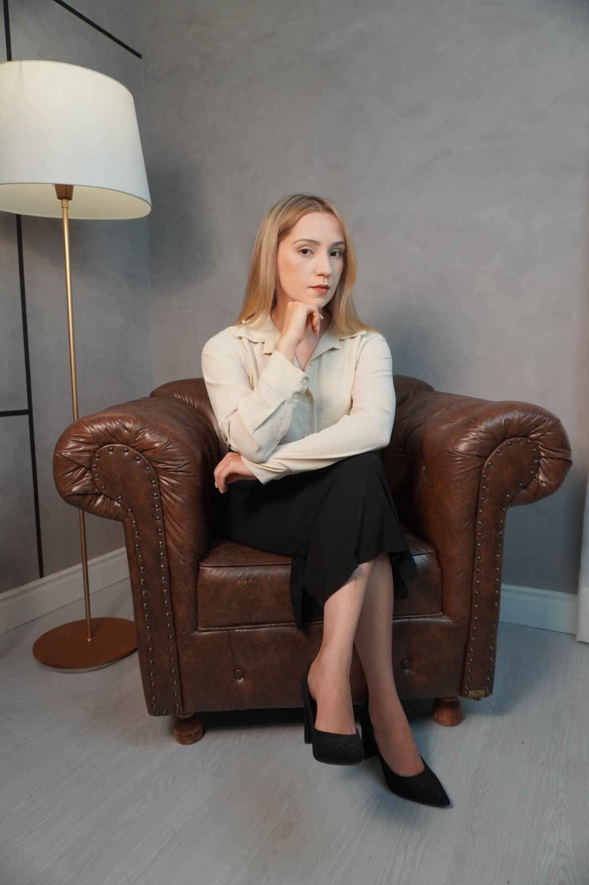

Assessoria jurídica com escuta cuidadosa, técnica refinada e respeito ao tempo de cada caso.

Formada em Direito pela UniSul (Universidade do Sul de Santa Catarina), em Florianópolis (SC), dedico minha atuação a oferecer assessoria jurídica personalizada, com escuta atenta e linguagem acessível. Acredito que cada caso carrega uma história única, e meu trabalho começa por compreendê-la antes de propor caminhos.
Minha prática combina rigor técnico e proximidade com o cliente — entendo que questões jurídicas, em geral, vêm acompanhadas de momentos delicados, e procuro conduzir cada processo com sensibilidade, transparência e responsabilidade.
Formação
Graduação em Direito — UniSul, Universidade do Sul de Santa CatarinaEspecialização
Pós-graduanda em Direito e Processo do Trabalho e PrevidenciárioInscrição OAB
OAB/MS 32.316Atuação
Presencial em Campo Grande/MS e online em todo o BrasilDivórcio, guarda, pensão alimentícia, união estável, inventário e partilha. Atendimento com sensibilidade ao contexto emocional envolvido.
Contratos, indenizações, responsabilidade civil, direitos da personalidade e questões imobiliárias.
Defesa em relações de consumo, cobrança indevida, vícios de produto/serviço e negativação irregular.
Orientação ao trabalhador e ao empregador em rescisões, verbas, assédio, acordos e ações trabalhistas.
Aposentadorias, benefícios por incapacidade, pensão por morte, revisões e planejamento previdenciário.
Análise preventiva de documentos, contratos e situações jurídicas — para decisões mais seguras antes do conflito.
Cada etapa foi pensada para garantir transparência, escuta e direção clara. Sem promessas, sem pressa — apenas o passo a passo que a sua situação merece.
Conversa inicial por WhatsApp ou direct para entender brevemente sua situação e agendar uma consulta — presencial ou online, conforme sua preferência.
Encontro dedicado à escuta, análise dos documentos e elaboração de um parecer com os caminhos jurídicos possíveis, riscos e estimativas.
Definida a estratégia, conduzo o processo com atualizações periódicas e linguagem clara — você acompanha cada etapa sem juridiquês.
Toda informação compartilhada é estritamente confidencial e protegida pelo dever ético de sigilo.
Documentos, andamentos e estratégias explicados de forma clara — sem termos técnicos sem necessidade.
Atendimento personalizado, com tempo dedicado a compreender o contexto único de cada cliente.
Estudo e atualização contínuos em jurisprudência, doutrina e mudanças legislativas relevantes.
O primeiro passo é uma conversa. Me chame no WhatsApp e marcamos um horário para te ouvir com a atenção que a sua situação merece.
Iniciar conversa no WhatsApp(48) 99145-8841
tamyresnantesadvogada@gmail.com
Endereço
Campo Grande · MS